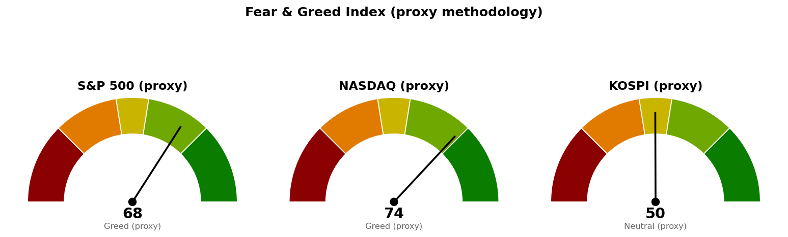

| 직전에 건 조건 | 판정 | 근거 |
|---|---|---|
| S&P 500 돌파 실패선 7,794 (종가 하회) | 진행 중 | 10/7 장중 7,777 · 시가 7,793 · 저가 7,763, 종가 미확정 |
| 나스닥 돌파 실패선 27,244 (종가 하회) | 미충족 | 10/7 장중 27,418 · 저가 27,341 |
| 코스피 다음 지지 6,830 (종가 하회) | 충족(추정 종가) | 10/7 종가 6,826(-1.66%) · 저가 6,804. 시간별 자료로 채운 값이라 확정 종가와 다를 수 있음 |
| 세 지수 도착지 · 사다리 · 취소선 · 30년 금리 5.286% | 미충족 | 어느 지수도 닿지 않음 · 30년 금리 10/7 장중 5.684% |
코스피는 직전이 걸어 둔 하방 갈래로 들어왔습니다. 다만 6,830 대비 4포인트 차이이고 추정 종가이므로 관찰 단계이며, 직전이 적어 둔 다음 가격은 사다리 1차 6,673입니다(현재 2.3% 아래). S&P 500 돌파 실패 판정은 장중 값으로 나지 않으므로 오늘 종가를 기다립니다. 세 지수 모두 직전 계획을 그대로 유지하며 가격을 옮기지 않았습니다.
20일선·50일선은 지수이동평균(최근 가격에 무게를 더 둔 평균)입니다. 미국 두 지수의 이평·하루 변동폭에는 10월 7일 장중 봉이 들어 있습니다.
현재가는 기준선 아래 17포인트로 한 세션 안의 거리입니다. 90일 박스 안쪽 판정은 중립(저점 절상, 상승봉 대 하락봉 거래량비 1.03)입니다.
나스닥 90일 박스 안쪽 판정은 직전 분산 우위에서 중립(저점 절하, 지지 테스트 거래량 혼조)으로 바뀌었고, 다음 지지 가격은 그대로입니다.
코스피는 두 이평 아래에서 마쳤고 20일선이 50일선 아래인 순서도 그대로입니다. 미국 두 지수는 아직 상방 갈래 안에 있어 방향이 갈려 있으며, 코스피 10월 8일 시가는 오늘 뉴욕 종가가 먼저 정하므로 코스피 계획은 미국장 결과에 종속됩니다. 30년 금리가 신규 편입 조건과 떨어져 있어 경로를 말할 근거가 없고, 이번에도 방향을 말하지 않고 기준선과 두 갈래만 냅니다. 세 지수 회차를 전부 집행하면 계좌의 16%(22,319,744원), 모두 취소선에서 멈추면 계좌 -0.23%(-318,663원)이며 갭으로 취소선을 건너뛰면 손실은 더 커집니다.
| 지수 | 값 | 등락 | 시가 | 고가 | 저가 |
|---|---|---|---|---|---|
| S&P 500 (10/7 장중) | 7,777 | -0.54% | 7,793 | 7,793 | 7,763 |
| 나스닥 종합 (10/7 장중) | 27,420 | -0.65% | 27,431 | 27,458 | 27,341 |
| 코스피 (10/7 추정 종가) | 6,826 | -1.66% | 6,864 | 6,978 | 6,804 |
| 니케이 225 (10/7 추정 종가) | 70,163 | -0.74% | 70,582 | 70,793 | 70,017 |
미국 주도섹터는 20일 기준 기술 하나이며, 초과수익은 +5.79 → +5.63 → +4.92로 세 브리핑 연속 줄었습니다. 오늘 장중에는 헬스케어(+1.78%)가 가장 강하고 산업재(-2.41%)가 가장 약해, 헬스케어 20일 초과수익이 0 위로 올라왔습니다. 하루치 움직임이라 주도섹터 판정을 바꾸지 않습니다.
한국 섹터는 테마형 ETF 기준이라 미국 업종 ETF와 성격이 다릅니다. 반도체는 1위를 유지했지만 10월 7일 하루 코스피보다 2.33%포인트 약했습니다. 이번 브리핑에서는 종목 발굴을 돌리지 않았습니다.
| 항목 | 값 | 직전 대비 |
|---|---|---|
| 미국 경기선행지수 (2026년 8월) | 100.96 | 7월 대비 +0.06 · 직전과 같은 값 |
| 한국 경기선행지수 (2026년 8월) | 102.87 | 7월 대비 +0.06 · 직전과 같은 값 |
| 미 10년 명목금리 | 5.31% (10/5 확정) · 10/7 장중 지수 시세 5.307% | 확정치 새 값 없음 · 시세 10/6 종가 5.269% 대비 +0.038%포인트 |
| 미 10년 기대물가 | 2.36% (10/6) | 직전과 같음 |
| 미 10년 실질금리 | 2.95% (10/5) | 새 값 없음 |
| 유가 (WTI) | 확정치 96.16달러 (9/29) · 선물 89.70달러 (10/7 장중) | 확정치 새 값 없음 · 선물 +0.29% |
| 달러지수 (광의) | 121.38 (10/2) | 새 값 없음 |
| 변동성지수 (VIX) | 15.56 (10/7 장중) | 10/6 15.01 대비 +3.66% · 백분위 37.4 (직전 29.4) |
경기선행지수(OECD가 장기 평균을 100으로 놓고 경기 방향을 몇 달 앞서 보여주는 지표)는 새 발표가 없어 해석도 직전과 같습니다. 10년·30년 금리가 장중 각각 +0.038%포인트 · +0.043%포인트 올랐고, 실질금리 10월 6~7일 값이 아직 발표되지 않아 금리 상승분이 실질금리에서 나왔는지는 이번에 판정하지 않았습니다.
1. 뉴욕 연은 소비자 기대 조사 — 1년 기대인플레이션 3.9%, 2023년 5월 이후 최고 (CNBC) 오늘 장중 10년·30년 금리가 오르고 S&P 500이 7,794 아래로 내려온 것과 같은 방향의 소식입니다. 30년 금리 5.684%는 신규 종목 편입 조건 5.286%에서 더 멀어졌습니다.
2. 연준 매파 기조로 9월 신흥국 자금 유출 (Reuters) 코스피가 10월 7일 6,830 아래로 마치며 미국 두 지수와 방향이 갈린 것과 겹치는 소식입니다. 코스피 다음 가격은 사다리 1차 6,673입니다.
3. 마이크론 대만 노조, 파업 승인 획득 (Reuters) 미국(XLK +4.92)과 한국(반도체 +15.12) 모두 20일 주도섹터가 반도체 중심이라 메모리 공급 쪽 사건은 두 지수에 함께 걸립니다. 기사 제목 외 세부 내용은 수집되지 않았습니다.
230건을 받아 10건을 추렸고, 나머지 7건은 인도 금리 인상·난방유 가격·애널리스트 종목 추천·SPY 대형 풋 스프레드 거래·IEA 비축유 방출 논의·한국 에너지 전환 계획 등 지수 기준선 판단과 관계가 약해 뺐습니다.

세 점수 모두 공식 CNN Fear & Greed 지수가 아니라 모멘텀·상대강도·변동성·안전자산 선호 네 항목으로 계산한 대용 지표입니다. 변동성 항목은 자기 과거 3년 분포에서의 자리로 산출하며, 미국은 변동성지수 15.6이 백분위 37.4(754일), 코스피는 내재변동성 지수가 없어 20일 실현변동성 연율화 29.1%가 백분위 68.2(708일)입니다. 네 항목은 나스닥 68.6 · 63.1 · 62.6 · 100.0, S&P 500 62.4 · 57.7 · 62.6 · 88.8, 코스피 42.0 · 52.5 · 31.8 · 75.3입니다. 미국 두 점수는 장중 값이고 직전은 종가 기준입니다. 나스닥이 극단적 탐욕에서 탐욕으로 내려왔습니다.
| 날짜 (한국시간) | 이벤트 | 확인할 것 |
|---|---|---|
| 10월 8일 05:00 | 뉴욕 마감 (미국 10/7) | S&P 500 7,794 · 나스닥 27,244 종가 위 유지 · 30년 금리 종가 |
| 10월 8일 15:30 | 코스피 마감 | 6,830 재회복 여부 · 사다리 1차 6,673 터치 여부 |
| 10월 8일 (미국) | 신규 실업수당 청구 | 고용 부진이 이어지는지 |
| 10월 14일 (미국) | CPI | 물가 지표와 금리 |
| 10월 28일 (미국) | FOMC | 금리 결정 |
| 10월 29일 (미국) | PCE 물가 · GDP | 물가와 성장 |
| 11월 6일 (미국) | 고용보고서 | 고용과 실업률 |
장부 보유 16종목, 매도 기록 없음(직전과 같음). 계좌 평가액 139,498,400원(9월 21일 등록값). 국면은 S&P 500 7,819가 200일 이동평균 7,236 대비 +8.05%(10/6 종가, 10/7 봉은 장이 끝나지 않아 제외), 코스피 6,826이 6,352 대비 +7.46%(10/7 추정 종가)로 두 시장 모두 신규 진입이 가능한 국면입니다.
1. 매수 쪽 — 지금 가격에 살 자리는 세 지수 모두 없습니다. 다음 회차는 S&P 500 1차 7,653(현재 -1.6%) · 나스닥 1차 26,680(-2.7%) · 코스피 1차 6,673(-2.2%)의 장중 터치입니다. S&P 500 1차 7,653은 9월 30일에 닿았는데 장부에 매수 기록이 없습니다. 매수했으면 수량·단가·날짜를 알려 주십시오. 2. S&P 500은 오늘 뉴욕 종가로 판정하십시오 — 7,794 아래면 돌파 실패로 보고 다음 지지 7,665와 사다리 1차 7,653을 봅니다. 위에서 마치면 관망이며 도착지는 7,950입니다. 나스닥은 27,244 종가 위면 관망, 아래면 26,992와 26,680을 봅니다. 3. 코스피는 10월 8일 종가로 6,830 재회복 여부를 봅니다. 회복하지 못하고 6,673에 닿으면 1차 분할 매수, 6,600 종가 하회 시 매수 계획 종료 — 새 리포트 대기입니다. 4. TQQQ 50주는 별도 종목 리포트의 기준 가격으로 판정되며 이 브리핑의 나스닥 계획과 무관합니다(10/2 목표 도달 신호 1회, 직전과 같음). 5. 신규 종목 편입은 30년 금리가 종가로 5.286% 아래일 때 재개합니다(10/7 장중 5.684%). 6. 미집행 매도 신호 — LS ELECTRIC (010120.KS) 39주에 10월 7일 집행 손절 신호가 새로 1회 생겼습니다. 나머지는 직전과 같습니다: USA Rare Earth (USAR) 8회 · Netflix (NFLX) 5회 · GE Vernova (GEV) 3회 · AMD (AMD) · Alibaba (BABA) · 현대해상 (001450.KS) · 한화손해보험 (000370.KS) 각 2회 · MP Materials (MP) · TQQQ 각 1회, 장기 보유인 Fluence Energy (FLNC) 6회 · LightPath (LPTH) 2회는 기록만 쌓입니다. 매도했으면 수량·단가·날짜를 알려 주십시오. 사실을 적을 뿐 매도를 권하는 것이 아닙니다.
다음 세션에 볼 것 하나 — 오늘 뉴욕 종가에서 S&P 500이 7,794 위인지입니다.
ATR(하루 평균 변동폭): 최근 14일 동안 하루에 오르내린 폭의 평균. · EMA(지수이동평균): 최근 가격에 더 무게를 준 평균 가격선이며 20일선·50일선은 이 방식입니다. · RSI(상대강도지수): 최근 14일 오른 폭과 내린 폭의 비율을 0~100으로 나타낸 값. · 확장선: 직전 상승 폭을 위로 연장해 계산한 가격. · 20일 초과수익: 최근 20거래일 수익률에서 기준 지수 수익률을 뺀 값. · VIX(변동성지수): S&P 500 옵션에 반영된 향후 30일 예상 변동폭. · FOMC: 미국 연준의 금리 결정 회의. · CPI: 소비자물가지수. · PCE: 개인소비지출 물가지수. · 기대물가: 명목금리와 물가연동채 금리의 차이로 시장이 보는 평균 물가상승률. · 실질금리: 물가연동국채가 직접 주는 금리.
이 문서는 참고 정보이며 투자자문이 아닙니다. 투자 판단과 그 결과에 대한 책임은 투자자 본인에게 있습니다.